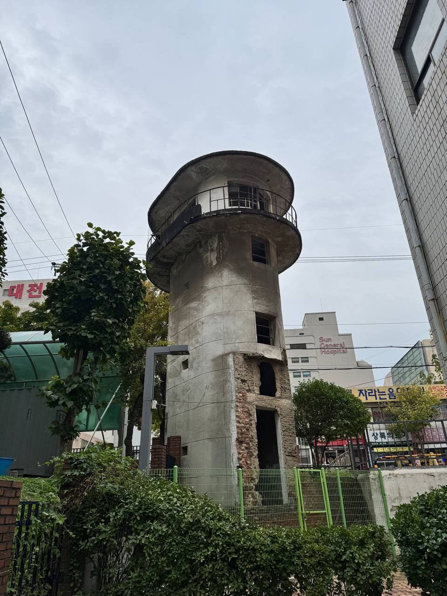
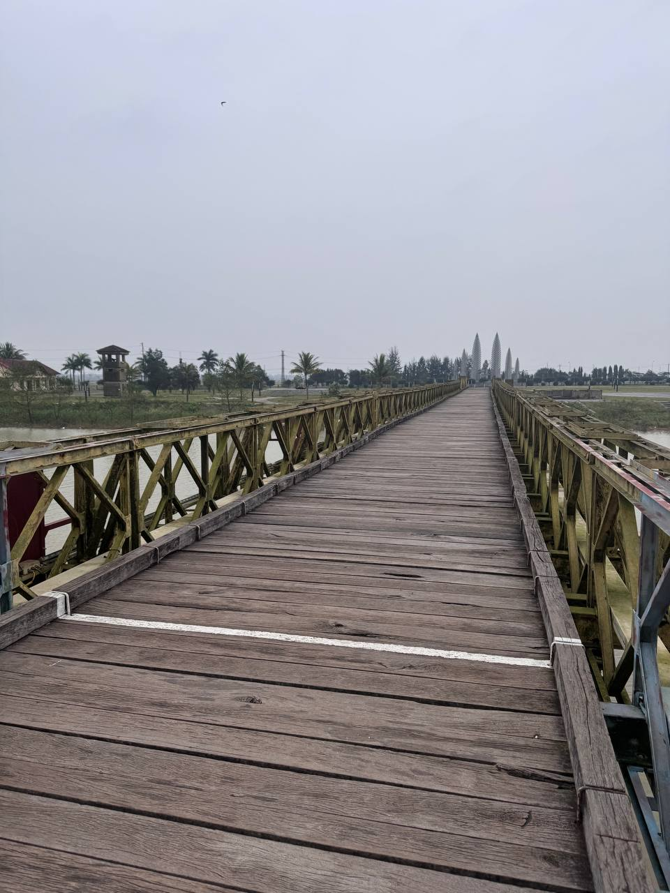
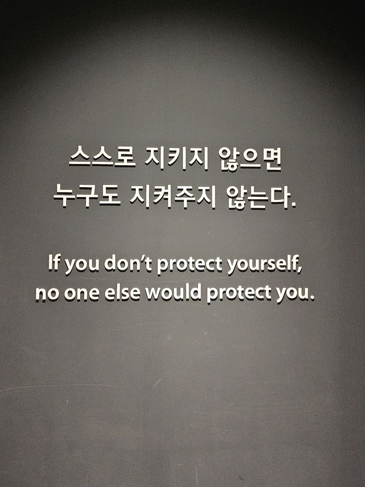

대전 형무소 터
과거 대전에 있던 형무소 망루. 이곳에 있던 사람들은 예비검속이라는 명목 하에 학살당했다.

베트남 DMZ 탐방
과연 분단이란 무엇일까. 고작 선을 그려놓고 넘지 못하게 하는 게 무슨 의미가 있을까.

전쟁, 그 기억의 파편
스스로 지키지 않으면 누구도 지켜주지 않는다. 현재 국방력을 강화하고 있는 상황을 합리화하는 듯하다.
💾
Download ZIP
사진 전체 저장
모든 현장 기록을
한 번에 다운로드하세요.